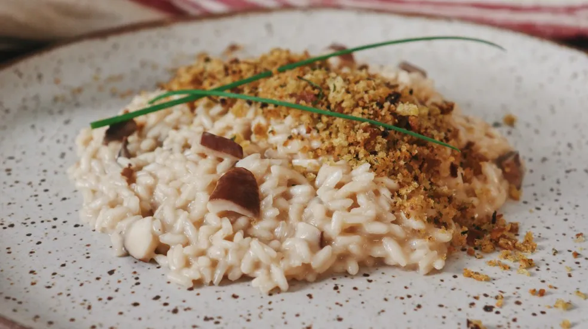

Receita de hoje: Risoto de Cogumelo

Ingredientes
- 250g de arroz arbóreo
- 100g de cogumelos shiitake
- 200ml de vinho branco seco
- 75g de manteiga sem sal
- 2 tablets de caldo de legumes
- 100g de queijo parmesão
- 2 cebolas médias picadas em cubinhos
- 4 dentes de alho (opcional)
- Sal e Pimenta a gosto
- Cheiro verde a gosto
- Azeite de oliva
Modo de Preparo
- Na frigideira pré-aquecida,
coloque um fio de azeite de oliva e refoque os cogumelos até que fiquem
dourados
- Dissolva os tabletes de caldo de legumes em uma panela com 1,5L de água quente
- Aqueça a panela e coloque um fio de azeite de oliva
- Coloque na panela a cebola picada e o alho e frite até dourar
- Em fogo baixo junte o arroz na panela com a cebola e o alho e frite levemente o arroz
- Junte o vinho na panela com arroz e vá mexendo até evaporar
- Junte 2 conchas de caldo de legumes ao arroz e mexa até evaporar
- repita o processo até finalizar o caldo
- Junte os cogumelos regolfados ao arroz
- Desligue o fogo e junte a manteiga e vá mexendo até o arroz ficar brilhante
- Sirva em um prato com queijo e cheiro verde a gosto